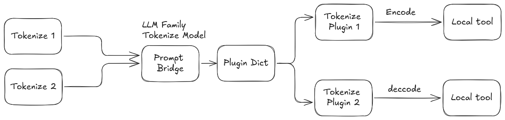

|
Prompt Tools 0.3.2
|
The tokenization service interface is prompt/tokenizer, using the Tokenize.srv definition. prompt_bridge selects the tokenizer plugin from input.model_family and executes tokenization locally or through the provider implementation.

| Field | Type | Description |
|---|---|---|
input | Token | The tokenization request message. |
| Field | Type | Description |
|---|---|---|
text | string | String to be tokenized (if encoding). |
tokens | int32[] | Tokens to be decoded (if decoding). |
encode | bool | True to encode text to tokens, false to decode. |
model_family | string | Model family/provider to use (e.g., openai). |
options | ModelOption[] | Model-specific options. |
| Field | Type | Description |
|---|---|---|
output | TokenResponse | The tokenization response. |
| Field | Type | Description |
|---|---|---|
tokens | int32[] | List of tokens (if encoding). |
text | string | Decoded text (if decoding). |
success | bool | True if conversion was successful. |
error | string | Error message if failed. |
| Field | Type | Description |
|---|---|---|
key | string | Option key |
value | string | Option value |
type | string | Type hint. The message constants currently define str, bool, int, and real. |
text to your string, encode to true, and leave tokens empty.tokens to your token list, encode to false, and leave text empty.model_family to the provider/plugin (e.g., openai, ollama).options for model-specific parameters (see plugin_parameters.md).O200K_BASE, CL100K_BASE, R50K_BASE, P50K_BASE, and P50K_EDIT.Encoding example:
Decoding example:
To add a new Offline Tokenizer provider, implement a plugin inheriting from prompt::TokenizeBaseClass and register it. Add its configuration to your YAML file and list it in tokenizer_family_names and tokenizer_family_plugins.
encode flag.prompt::OpenAITokenize, which uses cpp-tiktoken locally rather than a REST endpoint.success and error fields to check for errors.